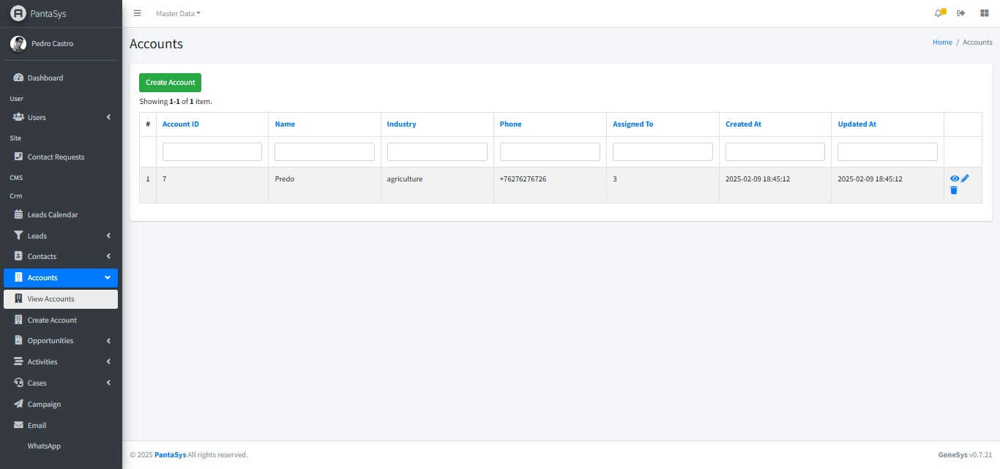
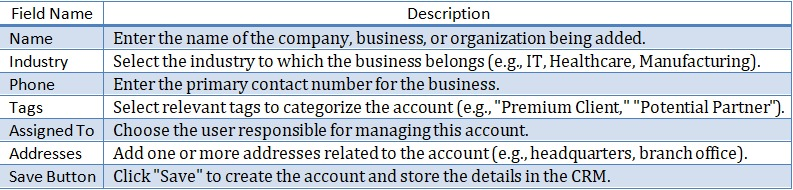

6. Accounts
6.2 Viewing all Accounts
On the “View Accounts” page, accounts are displayed in a table format, providing a comprehensive overview of all existing accounts.
{kind=link}
6.3 Create Account Form
The Create Account form allows users to add new accounts into the system. Below are the field descriptions along with their expected input values.

Below are the field descriptions along with their expected input values:
{kind=link}
Form Functionality
This form is used to store and manage business accounts rather than individual contacts.
Industry selection helps categorize businesses efficiently.
Tags provide additional segmentation options for easy filtering.
The “Save” button finalizes the account creation process.
6.4 Managing Accounts
PantaSys CRM provides comprehensive functionalities to manage accounts effectively. The Accounts function allows users to add new business accounts to the CRM system.
Creating an Account
To add a new account:
Navigate to Accounts: Click the “Accounts” button and expand the dropdown list.
Create Account: Click the “Create Account” button.
Fill in Details: Complete the fields in the form.
Save: Click “Save” to add the new account to the system.
Viewing an Account
To view details of an existing account:
Navigate to View Account: Access the “View Account” page.
Accounts Table: Accounts are displayed in a table format with relevant details.
View Icon: Click the “View” icon in the Actions column corresponding to the desired account to see detailed information.
{kind=link}
Updating an Account
To modify an existing account:
Navigate to View Account: Access the “View Account” page.
Edit Icon: Locate the account to be updated and click the “Edit” icon.
Modify Details: Make the necessary changes in the form.
Save: Click “Save” to apply the updates.
Deleting an Account
To remove an account from the system:
Navigate to View Account: Access the “View Account” page.
Delete Icon: Locate the account to be deleted and click the “Delete” icon.
Confirm Deletion: Confirm the deletion when prompted to remove the account.